How to Paint Everything: Ultramarines Space Marines (Updated September 25, 2026)
Changelog
- Update (Latest): 2026-09-23 Updated to include reference photos including the names of colors used.
- Update: 2023-11-23 Format streamlined.
- Published: 2022-01-05
Covered in this Article
- Schemes from different painters for how to paint the Salamanders, including the chapter's Pre-Heresy look.
- Tips on how to paint the Ultramarines Primarch, Roboute Guilliman
- Notes on the heraldry and iconography of the Ultramarines
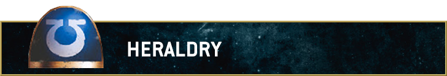
Ultramarines are the Codex Chapter, and as such they follow all the heraldic conventions laid down by Roboute himself. This makes for a lot of fun opportunities for little details and visual interest, such as distinguishing a squad of veterans with white helmets, or picking out a specific sergeant as a veteran with a red helmet and white stripe, or individual squad markings, etc. The adherence to codex markings is actually one of my favorite things about the Chapter because it adds some visual variety and also helps you tell micro-stories as you paint your squads and models. Ultramarines are vaguely Greco-Roman, and as such you can also make good use of certain motifs like laurels or helmet crests to help set models or units apart.
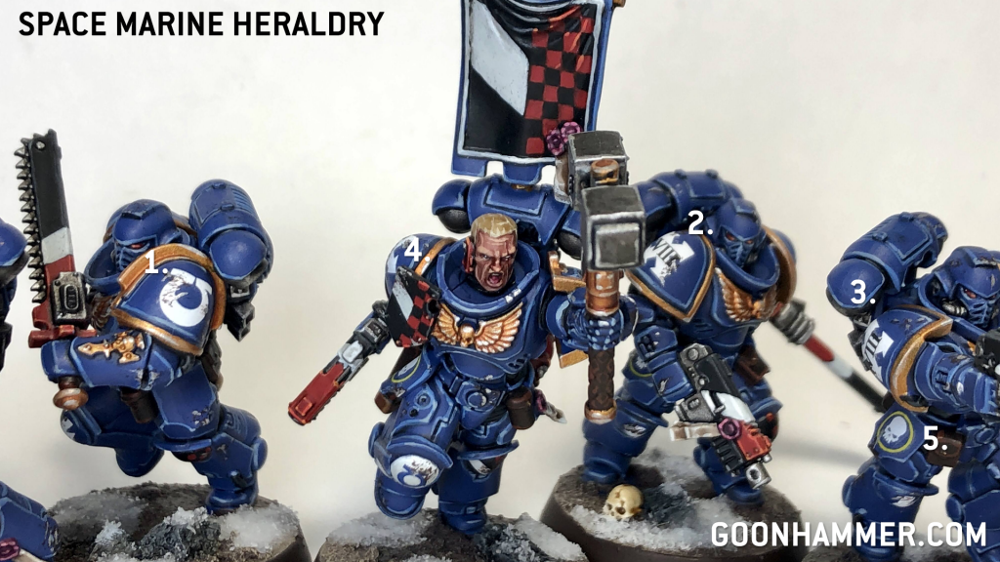
Credit: SRMOur Guide to Painting Space Marine Heraldry the Codex Astartes has everything you need to know about painting Codex-compliant chapters, with a particular focus on the Ultramarines.
Another option when thinking about heraldry is to use an alternative color scheme for a unit or set of units to distinguish them on the battlefield. Fellow Goonhammer author SRM has made great use of this for his Vanguard Marines by painting them in a scheme reminiscent of the Ultramarines Destroyer Scheme from the Horus Heresy. This gives the models a very distinct look while also looking cohesive with the rest of his force; you can learn more about it here.
Painting Ultramarines
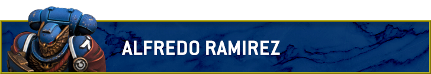
This was written when I had recently painted Veteran Battle Brothers Argentus and Auralius to accompany leaders of the chapter into battle. These models offer a lot of great details and opportunities for different techniques.
Step 0: Planning and Assembly
For any project, you want to have a plan! This was particularly the case for these two models because their cloaks were broken up in such a way that I couldn't feasibly paint them in subassemblies without (even uglier) seams when I was done (aside from heads and backpacks). With that in mind, I decided I would spray three main colors, blue for the armor, red for the cloaks, and metal for the swords, in that order and mask in between to protect previous steps.
Another important consideration was the inside of the cloaks. I chose not to glue the models to their bases while working on them so that I could pull them off and get at the space between their legs. This is good to keep in mind for any model with a cape or cloak. I did not think of this when I built my first squad of Skitarii, and it was... not fun.
Because the models consist of two main colors, blue and red, I took some time to think about how I wanted to paint those. I have a standard recipe for Ultramarine armor I use (scroll down), and I, of course, wanted to stick with that so they'd fit in with the rest of the army, so I needed the red to work with that. I find the red that 'Eavy Metal uses for Ultra's cloaks to be a bit too bold and vibrant for my tastes, particularly since my army is quite battle-worn.
I decided to go with a deep purple base for the red in order to tie it back to the purple tones of the blue and create some cohesion between these otherwise very different colors, and then bring the red up all the way to a bright ochre, without tinting it too far towards orange with highlights. The goal was to create some nice contrast between the red and blue while unifying them with purple shadows and also ensuring that the blue was the most saturated color on the model; they're Ultramarines, after all.If I could go back and do one thing differently, I'd be a bit more conservative in how I welded the seams on the cloaks. I use a mix of Tamiya Clear and melted sprue to create a liquid filler, but I went a bit overboard in my application, and you can see actual seam welds in several areas, which isn't ideal. So while the idea is sound, you really want to make sure you're not applying too much and take the time to sand and smooth down the seams to get a nice finish.
Step 1: Priming
I went with a black-to-white zenithal highlight for the pair. I wanted to maximise the contrast between the armor shadowed by the cape and the bright blue of their exposed pauldrons and helmets.
Step 2: Basecoating
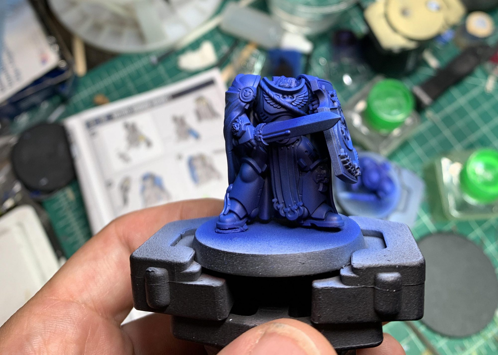
Credit: Alfredo RamirezFor the blue armor, I went way off the reservation and used a Reaper Master Series Triad called... Ultramarine Blues. Crazy, right? As you can (hopefully) see, the darkest color in the triad has some nice purple tones, and overall the triad is quite vibrant and blue.
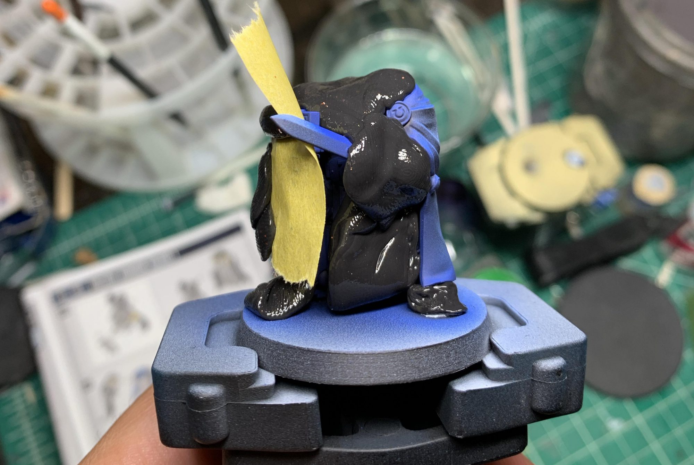
Credit: Alfredo RamirezUnlike most Space Marine models, the Victrix Guard have two very large areas of color, the armor and their capes. Rather than basecoat the capes by hand, I wanted to paint some nice and smooth gradients with the airbrush, so I masked off all the armor with a combination of Tamiya Tape and Masking Putty.
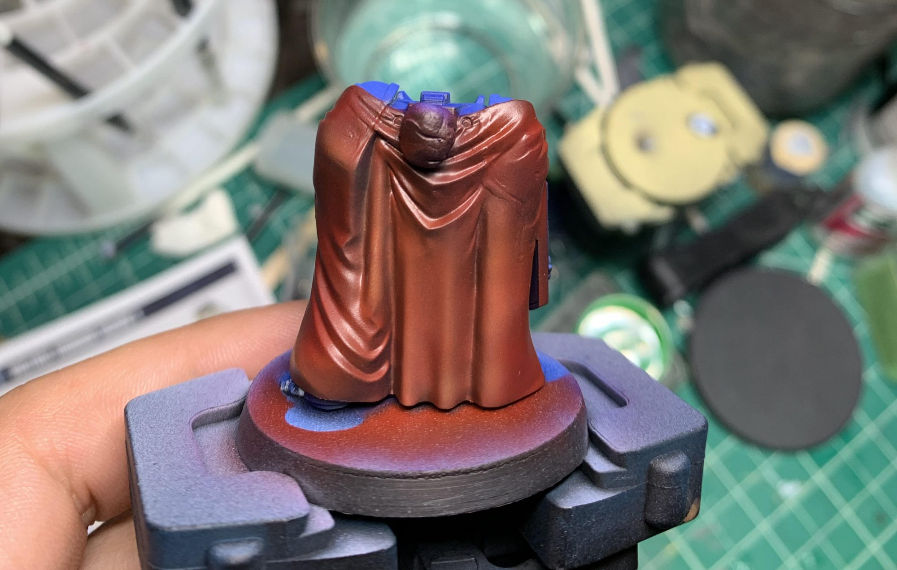
In order to create strong contrast between the light and dark areas of the cape while also unifying the shadows with the armor, I sprayed the entire cape with Vallejo Game Air Hexed Lichen, which is a dark and deep purple, and then sprayed Vallejo Game Air Bloody Red from a high angle. Using a very small needle, I was then able to get some very thin highlights on some of the folds of the cape with Vallejo Model Color Yellow Ochre. My cape was now going from purple to yellow, so in order to unify the whole thing, I sprayed it with some thinned Scale75 Inktense Red.
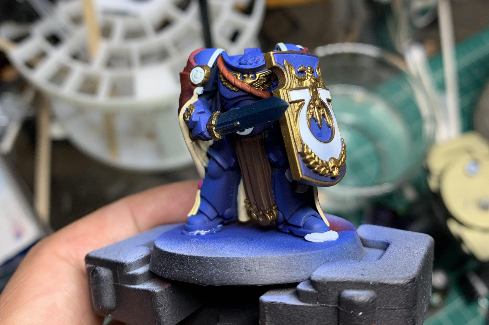
There were relatively few colors left to basecoat:
- Gold: My usual recipe for Ultras is Scalecolor Decayed Metal as a base, followed by covering most areas with Scalecolor Necro Gold and then highlighted with Scalecolor Dwarven Gold.
- White: For some of the white, I stole a trick from fellow Goonhammer author (and resident Dadhammer expert) Lupe and used a mixture of Vallejo Model Color Light Sea Grey, which is a nice cool off-white with fantastic coverage, and white Artist's Ink from Daler Rowney. This gave me a nice smooth white in 2-3 coats. For the big Ultimas on the shields, I ended up re-masking the model and cheating with an airbrush, using a progression of Reaper Snow Shadow, Reaper Ghost White and Vallejo Model Air Insignia White to get some nice and smooth blends on the larger area. Masking might sound like a lot of work, but I promise it's not and can ultimately save a lot of time for tricky colors like white, red or yellow.
- Other Colors: For the rest of the details, I used my usual Vallejo Model Color Dark Rust for the leather, Vallejo Model Color Cavalry Brown for the aiguillette across the chest, Vallejo Model Color Buff for the parchment and Vallejo Model Color Magenta for the purity seal wax.
Step 3: Washing
Before washes, I applied decals on the gloss-coated model. See JD's section below for details on how best to apply decals.
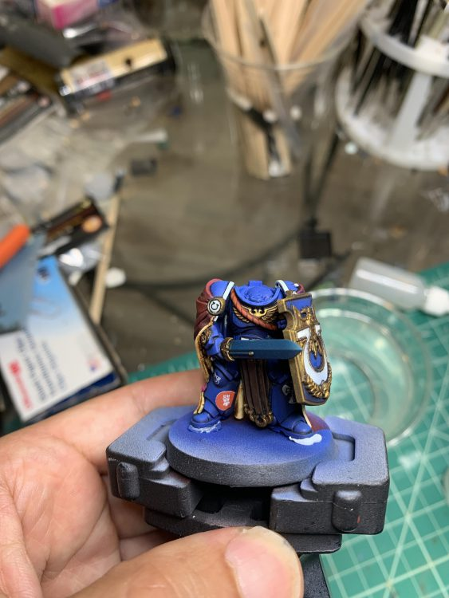
Washing was pretty simple. A pin wash of a black/burnt umber mixture (giving me a warm black to contrast with the cool blue) on the armor and deepest shadows of the cloak, and all-over washes of burnt umber on the gold and other details. The interior of the cloak got an all-over wash, which I then cleaned up with some white spirits.
Step 4: Highlighting
Highlighting follows my usual process. I start by highlighting every armor edge with Scalecolor Sky Blue, which is a nice vibrant and bright blue. I then hit top-facing edges with Vallejo Model Color Sky Blue, which is a much lighter color despite having the same name. Finally, I hit corners and compound edges with Vallejo Model Color Blue Grey Pale.
Step 5: Weathering
My Ultramarines are typically weathered in three stages:
- Using a piece of sponge, I apply Scalecolor Trash Metal first and then Vallejo Model Color German Camo Black Brown to areas of wear such as the top of the helmet, shoulder pads, feet, hands, etc.
- Take some dark umber pigment powder and mix it with pigment medium to create a runny paste. I then apply this to some of the recesses on the legs and feet to show areas where mud has built up and dried.
- Once that is dry, I apply dry pigments to the legs to get a dusty effect. Depending on what I'm going for, I might do this more than once with applications of matte varnish at very low PSI in between.
Finished!
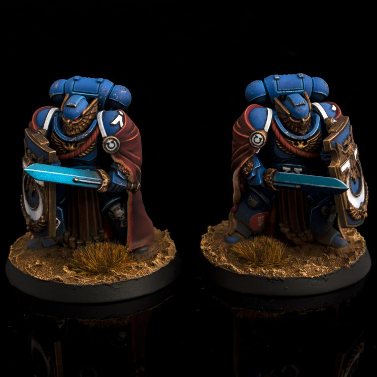
Credit: Alfredo RamirezWith these models being so similar, I chose to use a little bit of heraldry to differentiate them in my head and give them some backstory. Brother Argentus was recently promoted to the Victrix Guard after the death of one of his predecessors, and you can identify him by his Vigilus Campaign Badge (peeking out behind the shield on his right greave). Brother Auralius, on the other hand, is a 2nd-generation Primaris who underwent the Calgarian Rites and has served the chapter for well over a century. His left greave is decorated with a much older Campaign Badge, commemorating his valor in a joint action with the Crimson Fists a long way away from Vigilus.
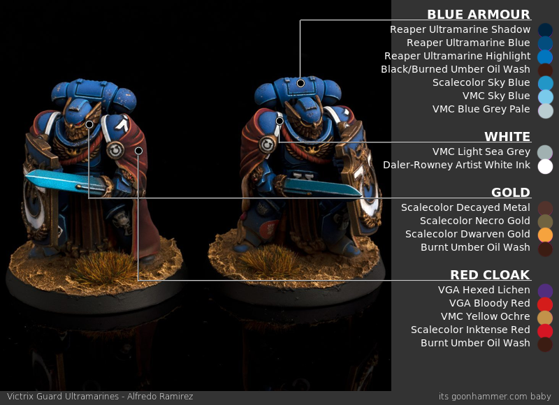
As is becoming standard, RichyP brings us yet another shamefully fast take on our Chapter of choice with great results!
Another quick paint job that looks good from tabletop distance. Note this model has had 2 failed paint jobs underneath it, so some of the details are a little more clogged than I’d have liked, but it works well enough to demonstrate it.
Step 1: Base Coat
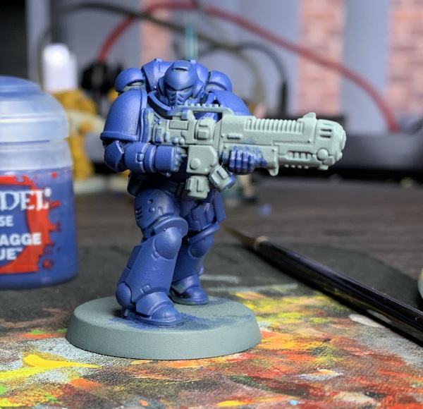
After priming the model grey, cover it in thinned Warhammer Macragge Blue (it took 2 quick passes with a size 3 brush to get an even coverage)
Step 2: Rough Highlight 1
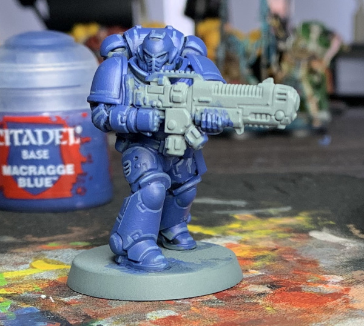
For this step, thin some Warhammer Russ Grey and do some thin lines around the prominent edges. They’ll look quite stark against the Macragge Blue, but the even starker inner highlight later will actually make it look less overpowering (as counter-intuitive as that sounds).
Step 3: Adding a bit of Contrast
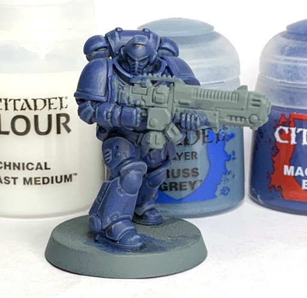
Take some Warhammer Nuln Oil and mix it with Contrast Medium, mix it about 1:2 (1 part Nuln to 2 parts Contrast Medium). Now cover all the blue areas. I switched to a different background here for some unknown reason.
Step 4: Edge Highlight 2
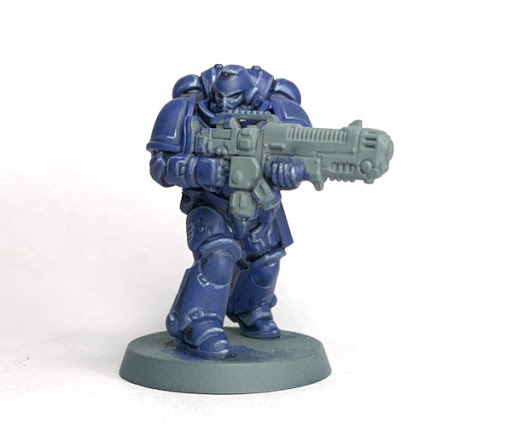
My favourite bit after the owl painting section is this bit. I used Warhammer Blue Horror for this stage, but Warhammer Ulthuan Grey would probably work equally as well if you’re not an edging enthusiast. Take the colour and thin it with water until it almost breaks, then it’s ready to use. Using a smaller brush (I used a 1 for this bit), draw some smaller lines inside the previous highlights, and it’ll make it look like the blue is glossy.
Step 5: Black-Lining
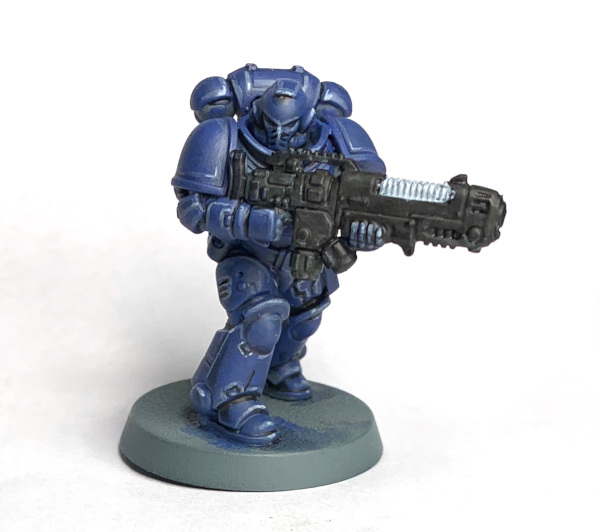
Thin some Warhammer Abaddon Black (again, get it to the point where it almost separates) and apply it in the deepest recesses, and cover any metallic areas or anything that will actually be black (in this case, the gun). The thinned black will pool in the recesses over the grey primer and give you a cheap shade and base coat in one. Not pictured in this step, I also painted the eyes with the previous mix of Warhammer Blue Horror (I also did the plasma coil the same).
Step 6: The Devil’s in the Details
This step looks like there’s a lot of work involved; there really isn’t, but because of the amount of little bits, I’ve bundled them into one step.
Paint scratches in the thinned black from the previous step, and paint the under-edge of the lines in the same Warhammer Blue Horror colour from the previous step to give yourself a fake 3d scratch.
Paint the eye sockets in orange, and dot the same Blue Horror in the back corners. Write some text, U Symbols squad markings, etc., also using the same Blue Horror colour. (I did a couple of red bits too for variety and to tie in with the eye lenses). Cover the plasma coil in Warhammer Aethermatic Blue Contrast, and deliberately go outside the lines to fake a glow.
Edge the pads in gold or whichever company colour you’re aiming for. (I used Scalecolor Elven Gold and blended it with some silver while it was wet).
Don’t forget to paint GH on the shoulder to show your allegiance.
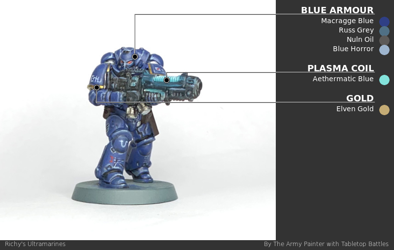
Self-deprecating introduction aside, JD paints some fantastic-looking Ultramarines that look like they popped off the 'Eavy Metal box art. With this in-depth breakdown, you too can have an 'Eavy Metal Ultramarine army!*
So you want to know how to paint Ultramarines? What can I say that you don’t already know, or can’t look up yourself? Did you fall in love with Games Workshop’s box art? Do you like following the rules, and have no imagination of your own? Then maybe this is the tutorial for you!
I haven’t been part of this hobby long when compared to some of the other hobbyists on here, but the time I have spent within it has been devoted almost entirely to painting Ultramarines, so hopefully this article will help you avoid some of the mistakes I made. Over time, I have done my best to mimic the ‘Eavy Metal style you see on the box art, and I am here to say anyone can do it given the following: practice, steady hands, and good eyesight. No artistic talent required, trust me!
I started painting my Ultramarines back in 2014 (maybe?), and didn’t even use the now-standard Games Workshop scheme until 2015. As any veteran painter can sympathize I view all models from this era as total trash that belongs in a dumpster. While this is overly critical of my previous work, it is important for a painter to have a constant desire to improve. I feel the steps I will list are perhaps the maximum effort I am willing to expend when it comes to painting line troops and vehicles in my army, which is admittedly already very time-intensive. There are further techniques such as airbrush highlighting and blending that can take everything here one step further, so don’t hesitate to introduce them if you have that extra time to burn.
Step 1: PREPARATION!
Before you even begin to paint your models, here are some steps that everyone should take regardless of whether they are painting Ultramarines.
A. Subassemblies: These are important for a couple of reasons. 1) If you fully assemble a model, you’re often going to find that you aren’t going to get 100% coverage with your basecoat if you’re using a rattle can (in this case, Macragge Blue Spray). Not fully assembling the model will allow the paint to hit those areas you might otherwise have trouble hitting and keep that undercoat consistent model-wide. 2) Keeping your model broken up will also allow you to get to details with your brush that might be harder to reach on a fully painted model. How many times have you tried to paint the aquila on the chest of a marine, only to get gold on his boltgun, which he is clutching tightly to his bosom? B. Taping: This is done concurrently with sub-assembling and is just as important. Use an X-Acto Knife to cut out small pieces of painter’s tape to cover the connection areas of the sub-assemblies. This is important because paint over these areas will make it hard for the glue to hold the final model together, and because GW’s current line of models fit together so perfectly, the undercoat can prevent the model from coming together as intended.C. Pinning (keeping your dirty nerd hands from ruining your work): For this you want some paperclips and wine corks. What you then do is drill a VERY SHALLOW hole into a non-visible part of the model like the bottom of a foot, gun barrel, or connection point and then use a small amount of super glue to attach a clipped piece of paper clip to it. You then suspend the assembly upwards by push the other end of the paper clip into the cork.
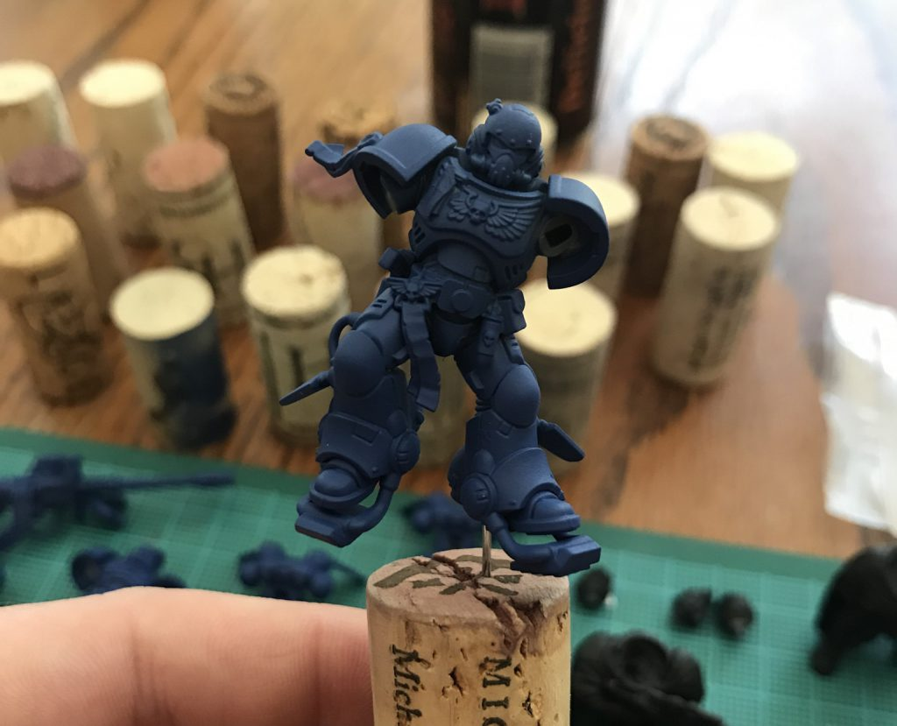
Step 2: Painting time!
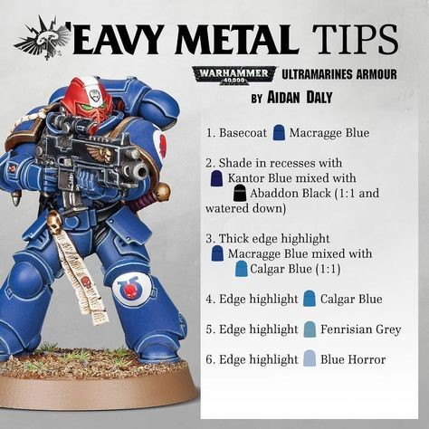
So here is the ‘Eavy Metal recipe, but this leaves out some important information on how each of these steps is accomplished, which I will attempt to expand on.
Author’s Note: I do not 100% copy the colors outlined by ‘Eavy Metal, but as you can see from my pictures, they are basically a match. Feel free to use either color scheme, and just focus on my tips for applying progressively lighter edge highlights. You’ll notice that in the above picture, steps 4-6 are merely described as “edge highlight”, which doesn’t convey the differences in each step.A. Basecoat Macragge Blue – The best way to accomplish this is using the GW rattle can. It is going to provide very even coverage, and doesn’t even require a primer. If you want, you can go over the bottle with Chaos Black primer and then follow it up with the Blue spray. This can be useful if you wish to ensure no grey areas are exposed; however, it isn’t necessary as long as you are being thorough in how you apply the Macragge Blue.
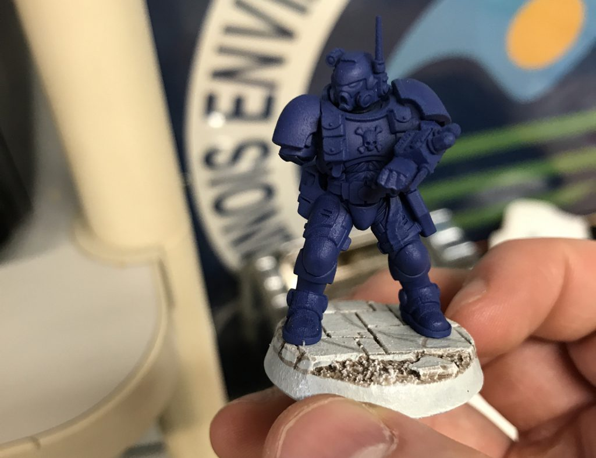
Author’s Note: I tend to finish my bases before I begin the model itself, and use a GW painting handle to prevent paint from being rubbed off.
B. Recess shade with Nuln Oil – I use a GW glaze brush to shade every recess of the model. This can be time-consuming, but I find it more efficient than an all-over wash, since you don’t have to go back and brighten all the armor panels.C. Thick Edge Highlight of Calgar Blue – What does this mean? Basically, you’re looking for a line of paint less than 1mm wide on all armor panel edges. Perhaps the most important aspect of edge highlighting is maintaining consistent width throughout the model. You may have to go back and use Macragge Blue to tidy up, but be patient because this is perhaps the LONGEST and most important step to this technique.
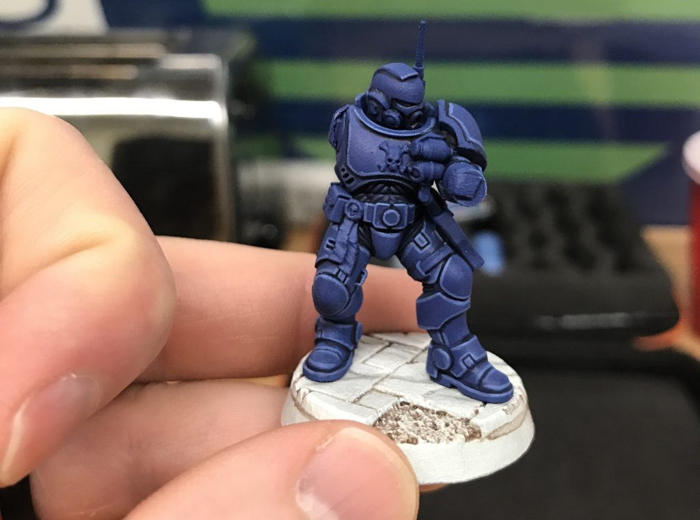
D. Thin Edge Highlight of Fenrisian Grey – Much of a repeat of the previous step, but you are covering slightly less of the area than in the previous step, and your lines are noticeably thinner, less than half the width of the Calgar Blue, and covering about 50-75% of the edge area, focusing on the raised portions.
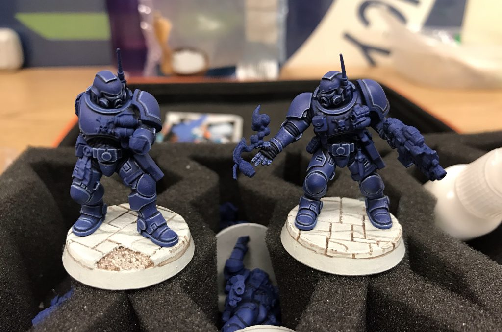
E. Corner Highlight of 50:50 Fenrisian Grey and White Scar – This is a final highlight meant to make the sharpest edges stand out and should focus on corners and only the apex of rounded areas such as the knee pads. These might seem too bright, but will become slightly dulled down by the final varnish spray used to protect the finished model.
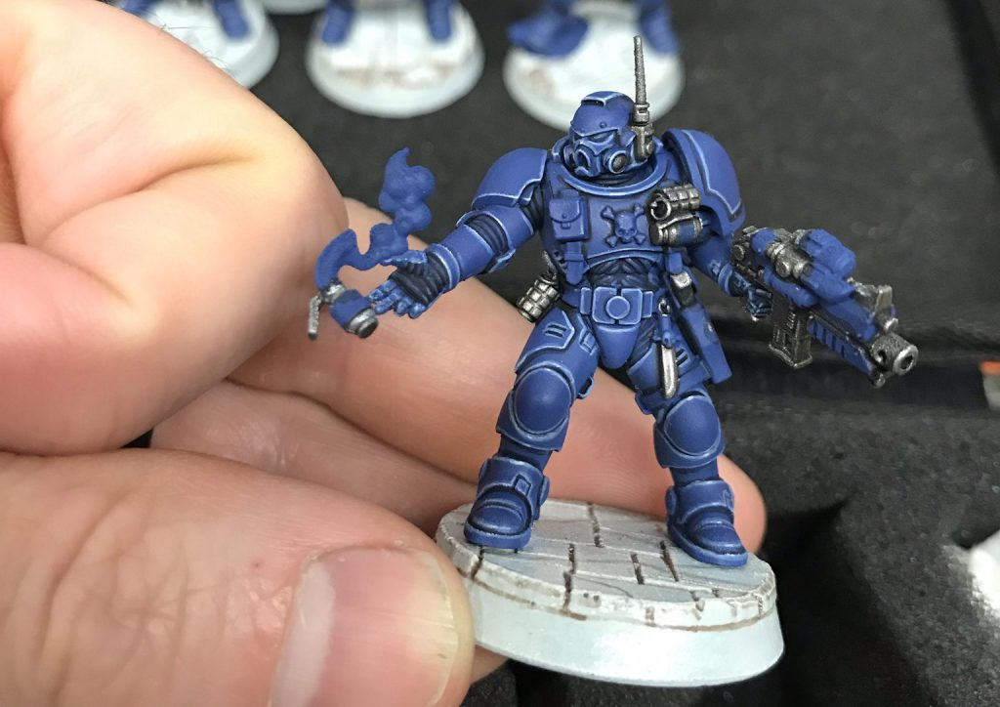
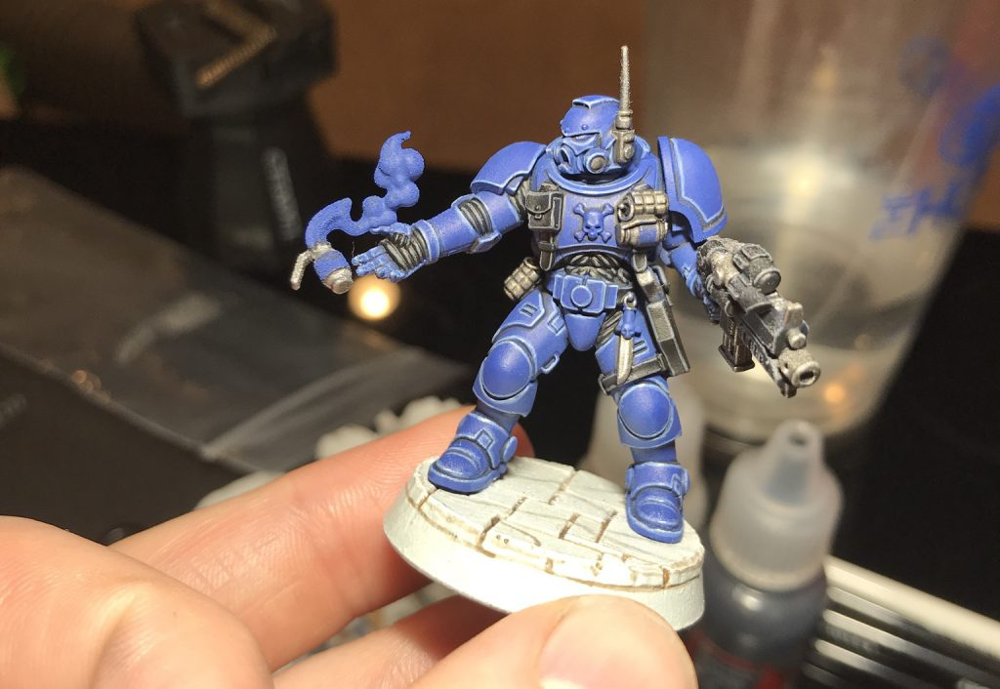
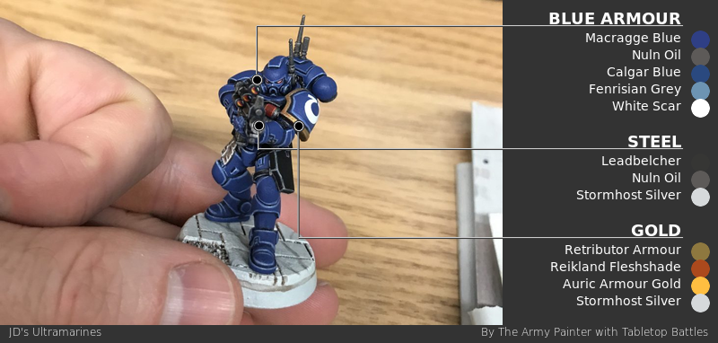
I have only outlined the steps for painting the blue armor in detail; however, the techniques used for these portions also apply to the metal, gold, and black areas of the model.- Black Portions – Base: Abaddon Black > Edge: Mechanicus Standard Grey > Thin Edge: Administratum Grey
- Metal Portions – Base: Leadbelcher > All-over Shade: Nuln Oil > Edge: Stormhost Silver
- Gold Portions – Base: Retributor Armour > All-over Shade: Reikland Fleshshade > Edge: Auric Armour Gold > Thin Edge: Stormhost Silver
Step 3: Final Touches
If you have completed the above 4 main portions of the model, congratulations, you’re in the home stretch. When it comes to the purity seals and bolter optics, I merely used the tutorials available on Games Workshop’s Youtube page. For the eye lenses, I applied Ceramite White, making sure to keep it out of the recesses, and then used a glaze of which color I wanted them to appear. This method creates excellent results and can be much less frustrating than trying the same method that is used on weapon optics.
For the insignia if you haven’t been blessed with the secrets to applying transfers I will outline it for you here.
- Buy Micro Sol and Micro Set
- Apply Micro Set to the surface you want to apply the transfer to.
- Apply the transfer to the area using water.
- Apply Micro Sol to the transfer in small amounts, letting it dry each time. Each application should see the transfer become noticeably softer and softer until it adheres smoothly to the surface
- Let the transfer dry fully.
Now for the finishing touch. At this point you’ve likely invested a lot of time into the model, and ensuring it remains protected is the final step. I use both a gloss and matte spray varnish to protect my models, specifically, Model Master’s Gloss and Lusterless sprays. The conditions for varnishing your model should be the same as those you used to undercoat it. Apply a single coat of the gloss varnish first; this will provide a thick coat to help protect your model. It is important to note that this stuff comes out thick, even with a quick pass over, so don’t overdo it. Once it dries, you will notice your model looks like it just went through a car wash and wax treatment. Now apply a coat of the Matte/Lusterless Spray. Once it dries, decide if you want to dull it down with another coat. BE CAREFUL at this stage not to overdo it, as you don’t want to dull your model’s brightness to a state below how they looked when you initially painted them.
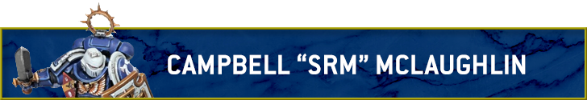
I have a feeling my method is going to align fairly closely with JD’s, as we’re likely working from the same half-forgotten White Dwarf from ages ago. I will not be covering basing; we have other articles for that. The most important step in my process, and one you’ll see appear whenever I do edge highlights, is the cleanup stage. Always try for crisp highlights, but if you clean up any shaky lines after the fact with a thinned version of your basepaint, you’ll get cleaner results. This step will also be useful later for cleaning up wherever recess shades may have spilt over.
Step 1. Basecoat
We’re going to start with a basecoat of Macragge Blue spray, although you could prime black and paint over with Macragge Blue from a bottle for the same effect.
Step 2. Blue Armor
This is the most important step, so we’ll get it out of the way first. We’ll start by recess shading any details with Nuln Oil, giving them depth and shadow. After this, we highlight each and every edge with Calgar Blue, then hit the sharpest edges with Fenrisian Grey. I also do this around the inside edge of the shoulder pads.
- Blue Armor
- Basecoat: Macragge Blue
- Recess Shade: Nuln Oil
- Edge Highlight: Calgar Blue
- Extreme Edge Highlight: Fenrisian Grey
Step 3. Gold
Blue without gold is like peanut butter without jelly, and a warm gold will balance the cool blue of the armor nicely. I would advise using two thinned coats of Retributor Armour, as all metallic paints are prone to clumping. We’ll wash the chest aquila and anything with detail, like reliquaries or laurels, with Reikland Fleshshade. I usually don’t wash the armor trim unless there are rivets to wash around or an overlapping lip. We’ll then edge highlight it all with Liberator Gold, and hit the sharpest corners with Stormhost Silver to get a gleaming gold. I sometimes skip the Liberator Gold step, but the Stormhost Silver step has a lot of impact.
- Gold
- Basecoat: Retributor Armour
- Recess Shade: Reikland Fleshshade
- Edge Highlight: Liberator Gold
- Extreme Edge Highlight: Stormhost Silver
Step 4. Steel
There’s plenty of metal on any given Marine that will fit in this category - some doodads on the helmet, chains, weapon details, and more besides. You can also change up the skulls in the chest aquilas with steel to make them stand out more. I sometimes find it helpful to paint these black first just to outline them, but consider that step optional. From there it’s just a base, an all-over wash, and a highlight, done. You could also use this for the armor undersuit.
- Steel
- Basecoat: Leadbelcher
- All-Over Shade: Nuln Oil
- Edge Highlight: Stormhost Silver
Step 5. Black Undersuit, Weapons, and Armor
We’re going to paint the undersuit, weapon stocks, and, in some cases, weapon casings black, highlighting it with grey. We’ll be keeping this grey neutral to fit with the color scheme. Too cool and it would blend in, too warm and it would look out of place. Feel free to use whatever black you like here - I like P3’s, but if you wanted something flatter, you could use Pro Acryl Coal Black, or you could use Abaddon Black.
- Black Details
- Basecoat: P3 Thamar Black
- Edge Highlight: Eshin Grey
- Extreme Edge Highlight: Dawnstone
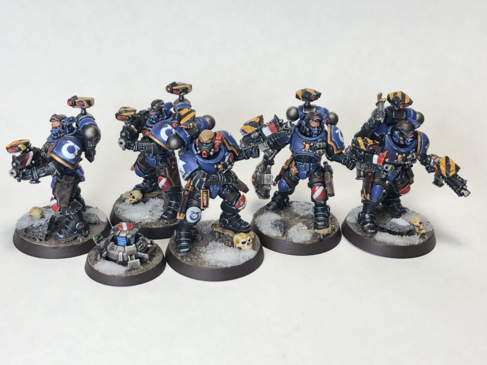
Ultramarines Incursors. Credit: SRMWhile this doesn’t appear on these models, black armor is a feature on Chaplains, and I like to paint black elements on my Phobos models. For this, I go for a different, cooler black, using the same final highlight color to better tie it in with the blue armor.
- Black Armor
- Basecoat: P3 Thamar Black
- Edge Highlight: Dark Reaper
- Extreme Edge Highlight: Fenrisian Grey
Step 6. Red Armor and Weapon Casings
There are people who paint their weapon casings in bright primary colors, and there are people who are cowards. Choose wisely. Obviously you could go with black here - I vary my weapon casings up a lot for fun’s sake - but I generally like red for maximum impact. Much like my process for blue, this will involve a base color, some targeted recess shades, edge highlights and cleanup. On these Bladeguard, I only used this technique for the Veteran Sergeant’s helmet and heraldry across the squad, but normally use it on my boltguns and other weapons.
- Red Details
- Basecoat: Mephiston Red
- Recess Shade: Nuln Oil
- Edge Highlight: Wild Rider Red
- Extreme Edge Highlight: Fire Dragon Bright
Step 7. White Armor
A common mistake is to start with a pure white here, but if you do that, there’s nowhere to highlight up to! Instead, we’ll start with a lighter off-white and highlight up. Ulthuan Grey is a great color that covers well over blue, so we’ll slap that down, thin some Nuln Oil down for a recess shade, then highlight that with Pro Acryl Titanium White. I use this on the 1st company trim and helmets, as well as some heraldry and unit markings.
- White Armor
- Basecoat: Ulthuan Grey
- Recess Shade: 1:1 Nuln Oil and water or Lahmian Medium
- Edge Highlight: Pro Acryl Titanium White
Step 8. Yellow Armor and Weapon Casings
I use yellow often with my heraldry and weapon casings, so if you want to follow my lead, I’ll tell you how. Hell, you could even go for a retro-inspired scheme and use this for trim and details in place of gold; it’d probably look lovely.
- Yellow Details
- Basecoat: Averland Sunset
- Recess Shade: Fuegan Orange
- Edge Highlight: Yriel Yellow
- Extreme Edge Highlight: Dorn Yellow
Step 9. Leather
Straps, holsters, and handles of weapons will often be leather, and I like a warm dark brown. Contrary to my normal techniques, I only have one edge highlight on here, but I’ll point you in the right direction for highlight #2.
- Brown Leather
- Basecoat: Rhinox Hide
- All-Over Shade: Agrax Earthshade
- Edge Highlight: Doombull Brown
- Extreme Edge Highlight (not pictured): Skrag Brown
Step 10. Purity Seals
You will invariably have a few of these Good Boi Awards on your Marines, and I like to give them a magenta hue to keep them distinct from red details. Sometimes I also use the Purity Seal Wax technique on weapon hilts if I’m feeling spicy. I keep the scrolls desaturated to help them stand out from any robes, and this technique also works well for any other scrollwork they may have.
- Purity Seal Wax
- Basecoat: Screamer Pink
- All-Over Shade: Druchii Violet
- Edge Highlight: Pink Horror
- Extreme Edge Highlight: Emperor’s Children
- Purity Seal Scroll
- Basecoat: Rakarth Flesh
- All-Over Shade: 1:1 mix of Nuln Oil and Agrax Earthshade
- Edge Highlight: Rakarth Flesh
- Extreme Edge Highlight: Pallid Wych Flesh
Step 11. Lenses
I’ll outline two techniques here - one for general red lenses, and one for green lenses whenever you have a lens appearing up against something red, such as the sergeant’s helmet. These will both usually be on eyes, but also on any targeters, monocles, and whatnot. I paint the eye the base color, then paint progressively brighter half moons towards the inside edge of the eye, then dot the outside, darker edge with pure white.
- Red Lenses
- Basecoat: Mephiston Red
- All-Over Shade: Nuln Oil
- Edge Highlight: Evil Sunz Scarlet
- Extreme Edge Highlight (inner): Fire Dragon Bright
- Extreme Edge Highlight (outer): Pro Acryl Titanium White
- Green Lenses
- Basecoat: Caliban Green
- All-Over Shade: Nuln Oil
- Edge Highlight: Warboss Green
- Extreme Edge Highlight (inner): Skarsnik Green
- Extreme Edge Highlight (outer): Pro Acryl Titanium White
Step 12. Robes
There won’t always be robes on models, so I saved this for last. If you wanted to, I’d probably get this step done before Step 9, as leather details and purity seals are often sitting on top of robes. I was still nailing my technique for robes at the time I painted these guys, but it was a pretty simple base, shade, and layer up. Nowadays, I would have blended between the base color and the layer instead of going straight from one to the next without a transition, but you can follow my guide or learn from my mistakes. I would also add a final edge highlight.
- Robes
- Basecoat: Warhammer Zandri Dust
- Recess Shade: Warhammer Agrax Earthshade
- Layer: Warhammer Ushabti Bone
- Highlight: Warhammer Wraithbone
- Extreme Edge Highlight (not pictured): Warhammer Pallid Wych Flesh
Step 12. Transfers
No self-respecting Ultramarine would go to war without the proper iconography. My technique is identical to JD’s. However, we have one more step to go!
Step 13. Weathering
Transfers look great, and they look great when they’re a little scuffed up. For this, you’ll need a bit of foam because we’re going to do some sponge weathering. I have plenty of leftover hunks of foam plucked out of army cases over the years, so I rip a bit off, dip it in Rhinox Hide, dab some off on a paper towel, then start sponging the armored parts of the model. If you spill over onto any parts you don’t want to hit, if you’re quick and have a wet brush you can erase it. After sponging these armor chips brown, I use a fine brush with Stormhost Silver to define those chips in their biggest splotches.
- Chipping
- Sponge: Warhammer Rhinox Hide
- Highlight: Warhammer Stormhost Silver
I also will utilize a bit of weathering powder on the vents of each Marine’s power pack. I just jam an old brush full of black weathering powder onto the vents. I use Secret Weapon (RIP) Exhaust Black, but Mig Ammo Black would also do the trick.
- Exhaust
- Apply: Exhaust Black Weathering Powder
Step 14. Varnish
Any time you’re using transfers, weathering powders, or just painting over metal, you should varnish. Hell, you should probably do it on plastic models too. Varnish everything. I use Citadel’s Munitorum Varnish. Smarter Goonhammer writers than I have written many words on varnishing. Once you have this coat down, your models should be ready to go!
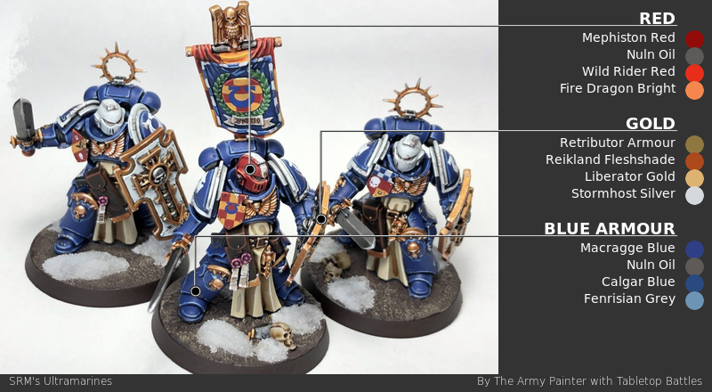
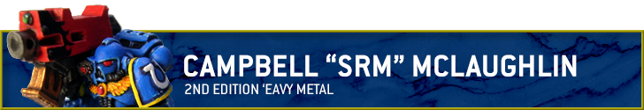
I have a retro Ultramarines army where no model is newer than 1997. I went for a "red period" 'Eavy Metal-style paint scheme with them, which you can follow below. As before, I won't tell you how to base your models, but I do have an up-to-date Goblin Green bases tutorial to complement these.
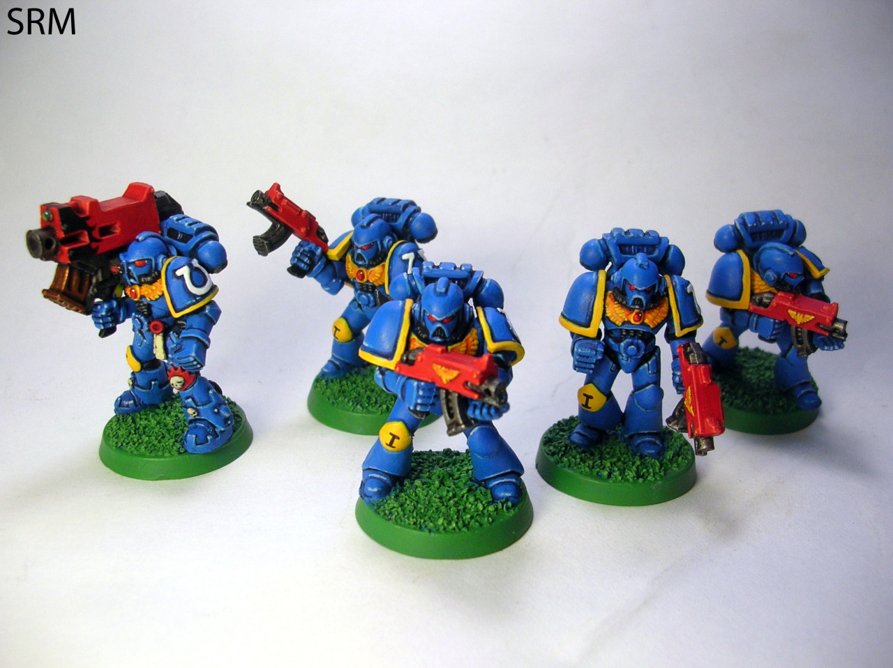
Funnily enough, a few of the colors and techniques here are nearly identical to those in my Primaris scheme. I'll reproduce them here anyway.
Step 1. Basecoat
We’re going to start with a basecoat of Skull White spray, although any white spray primer will do. I then spray with Army Painter Crystal Blue. It has a tendency to rub off; especially on metal models, so you'll likely want that white layer first. This is also more saturated than the Oldhammer look, but I had some grog in the Oldhammer group on Facebook cuss me out for not drybrushing the bases yellow and using too coarse basing grit. He's probably dead now.
Step 2. Blue Armor
It's a good idea to paint the whole model with thinned blue to ensure an even coat. Even moreso than with the modern look; going for a clean look is paramount. Always be ready to clean up after the fact.
- Blue Armor
- Basecoat: Army Painter Crystal Blue
- Recess Shade: Warhammer Drakenhof Nightshade
- Edge Highlight: Warhammer Calgar Blue
- Extreme Edge Highlight: Warhammer Fenrisian Grey
Step 3. Yellow Armor Details
This is essentially a full shift upwards in brightness from my modern yellow technique, going for a warm, saturated yellow. This is also what I'd do for hazard stripes.
- Yellow Details
- Basecoat: Warhammer Yriel Yellow
- Recess Shade: Warhammer Fuegan Orange
- Edge Highlight: Warhammer Flash Gitz Yellow
- Extreme Edge Highlight: Warhammer Dorn Yellow
Step 4. Red Armor and Weapon Casings
I usually paint these separately from the rest of the model, tacked onto a spare base or glued onto a thumbtack. Ideally, these are primed white with the rest of the model so you aren't painting so much red over blue.
- Red Details
- Basecoat: Warhammer Mephiston Red
- Recess Shade: Warhammer Nuln Oil
- Edge Highlight: Warhammer Wild Rider Red
- Extreme Edge Highlight: Warhammer Fire Dragon Bright
Step 5. Steel
There isn't too much silver/steel on these guys; metallics weren't used as commonly then. If I were to do these again I'd probably go up to Ironbreaker instead of Leadbelcher for a brighter look.
- Steel
- Basecoat: Warhammer Leadbelcher
- All-Over Shade: Warhammer Nuln Oil
- Edge Highlight: Warhammer Stormhost Silver
Step 6. Black Undersuit, Weapons, and Armor
Again, the undersuit and bolter stocks will be painted black, highlighted grey. I went for a neutral grey because I had to have at least one color on these models refrain from punching you in the face.
- Black Details
- Basecoat: P3 Thamar Black
- Edge Highlight: Warhammer Eshin Grey
- Extreme Edge Highlight: Warhammer Dawnstone
Step 7. Lenses
These too are reproduced from my Primaris Marines scheme. It's almost like I painted these first and carried over a lot of the techniques!
- Red Lenses
- Basecoat: Warhammer Mephiston Red
- All-Over Shade: Warhammer Nuln Oil
- Edge Highlight: Warhammer Evil Sunz Scarlet
- Extreme Edge Highlight (inner): Warhammer Fire Dragon Bright
- Extreme Edge Highlight (outer): Pro Acryl Titanium White
- Green Lenses
- Basecoat: Warhammer Caliban Green
- All-Over Shade: Warhammer Nuln Oil
- Edge Highlight: Warhammer Warboss Green
- Extreme Edge Highlight (inner): Warhammer Skarsnik Green
- Extreme Edge Highlight (outer): Pro Acryl Titanium White
Step 8. Purity Seals
These were rarer back in the 90s, so I didn't paint as many, but they still showed up occasionally. I also did this technique for the skull on the heavy bolter Marine's kneepad.
- Purity Seal Wax
- Basecoat: Warhammer Mephiston Red
- All-Over Shade: Warhammer Nuln Oil
- Edge Highlight: Warhammer Wazdakka Red
- Extreme Edge Highlight: Warhammer Wild Rider Red
- Purity Seal Scroll
- Basecoat: Warhammer Zandri Dust
- All-Over Shade: Warhammer Agrax Earthshade
- Layer: Warhammer Ushabti Bone
- Edge Highlight: Warhammer Pallid Wych Flesh
Step 9. Transfers and Varnish
These are going to be the same as anybody else's steps, including my own. Get transfers on these models (or in my case, freehand and moulded pauldrons), then varnish away! Metal models chip super easily, especially if you don't have a really durable primer on them.
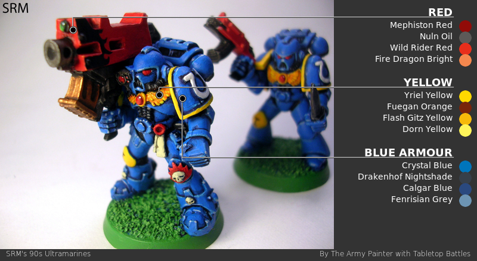
There's really just one special unit for the Ultramarines who needs his own article, and that's the Ultramarines' Primarch, Roboute Guilliman. You can find our article on How to Paint Roboute Guilliman here.
Final Thoughts
The Ultramarines may be the Boy Scouts of the Adeptus Astartes, but they're far from boring, with lots of unique characters and opportunities for interesting heraldry and special elements like laurel wreaths and cloth. They're a rewarding faction to paint and play, and unique in that regardless of what model you buy, you can always reference the box art for an example of a well-painted model.
Have any questions or feedback? Drop us a note in the comments below or email us at contact@tabletopbattles.com. Want articles like this linked in your inbox every Monday morning? Sign up for our newsletter. And don't forget that you can support us on Patreon for backer rewards like early video content, Administratum access, an ad-free experience on our website and more. This article is part of a larger series on how to paint Space Marines. To return to that series, click here.Originally published on Goonhammer.


{kind=link}
{kind=link}
{kind=link}
{kind=link}
{kind=link}
{kind=link}
{kind=link}
{kind=link}
{kind=link}
{kind=link}
{kind=link}
{kind=link}
{kind=link}
{kind=link}
{kind=link}
{kind=link}
{kind=link}
{kind=link}
{kind=link}
{kind=link}
{kind=link}
{kind=link}
{kind=link}
{kind=link}
{kind=link}
{kind=link}
{kind=link}
{kind=link}
{kind=link}
Leave a Comment